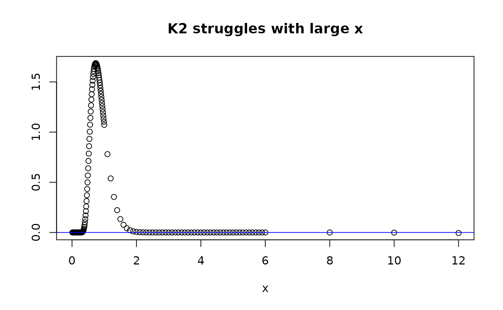

Deeper Dive: Kolmogorov Distribution, Density, Random Variates
by Bruce J. Swihart
Source:vignettes/articles/deep_dive_kolm.Rmd
deep_dive_kolm.RmdBackground
What does the Kolmogorov distribution have to do with multivariate product distributions? Turns out a distribution based on the Kolmogorov distribution – which is most commonly known for its development for and application in goodness-of-fit tests – is useful for making elliptically contoured multivariate logistic distributions.
There are two (equivalent) ways to represent the Kolmogorov distribution, in what is sometimes called a “limiting form” - which here means it involves an infinite sum. A third form is introduced, that “splices” the first two representations together:
Cumulative Distribution Function
Representation 1:
Representation 2:
Representation 3:
-
is
And taking the derivative with respect to , we get the corresponding limiting forms of the density:
Density
Representation 1:
Representation 2:
Representation 3:
-
is
dkolm(1,rep="K1")
#> [1] 1.071949
dkolm(1,rep="K2")
#> [1] 1.071949
dkolm(1,rep="K3")
#> [1] 1.071949Check expected value – should be
0.8687312…. One could do this with their own code, or they can use
mpvd::dkolm:
- own code / base R:
f <- function(x,nterms=1e5){
k=1:nterms;
-2*sum( (-1)^(k-1) * -4*x*k^2 * exp(-2*k^2*x^2) )
}
f_vec <- Vectorize(f, "x")
x_f_vec <- function(x) x*f_vec(x,nterms=1e5)
integrate(x_f_vec,0,Inf)
#> 0.8687312 with absolute error < 1.7e-05- Using
mvpd::dkolm:
x_f_K1 <- function(x, nterms=1e5) x*dkolm(x,nterms,rep="K1")
x_f_K2 <- function(x, nterms=1e5) x*dkolm(x,nterms,rep="K2")
x_f_K3 <- function(x, nterms=1e5) x*dkolm(x,nterms,rep="K3")
mom1_K1 <- integrate(x_f_K1, 0, Inf)[1]
mom1_K2 <- integrate(x_f_K2, 0, Inf)[1]
mom1_K3 <- integrate(x_f_K3, 0, Inf)[1]
print(matrix(c(mom1_K1, mom1_K2, mom1_K3, sqrt(pi/2)*log(2)),ncol=1), digits=20)
#> [,1]
#> [1,] 0.86873116063485644744
#> [2,] 0.86873116063489197458
#> [3,] 0.8687311606348562254
#> [4,] 0.86873116063615907212The printout shows agreement out to the 11th digit.
Next, we plot the densities and also print out some values.
The takeaways are:
- representation stuggles with small
- representation struggles with larger
Yet,
- representation is better with small
- representation is better with larger
And now we see the motivation for the construction of
.
Representation
uses
for larger
values bigger than a cutpoint and
for
values smaller than that cutpoint. The default value for the cutpoint is
K3cutpt = 2. We pick nterms=10 to demonstrate
the problems - in practice we pick the number of terms to be much
higher, say 1e5, which makes the violations less egregious for moderate
values of
but the violations can still persist for extremely small and large
values of
.
Therefore, solely increasing nterms may not be a solution
(depending on the application) for
or
.
That’s why mvpd uses the ’’spliced” version
as well as a default of 100,000 terms.
Plot density
nterms=10
xdom <- c(seq(0.0,1,0.01), seq(1.1,6,.1), 8,10,12)
plot(xdom,dkolm(xdom,nterms=10,rep="K1"), main="K1 struggles with small x", ylab="", xlab="x")
abline(h=0,col="blue")
plot(xdom,dkolm(xdom,nterms=10,rep="K2"), main="K2 struggles with large x", ylab="", xlab="x")
abline(h=0,col="blue")
dkolm(12,rep="K2",nterms=10)
#> [1] -0.005592438
#> [1] -0.005592438 from rep="K2"
plot(xdom,dkolm(xdom,nterms=10,rep="K3"), main="K3: best of both worlds", ylab="", xlab="x")
abline(h=0,col="blue")
dkolm(12,rep="K3",nterms=10)
#> [1] 8.043785e-124
#> [1] -0.005592438 from rep="K2"
Since is an alternating sum, if the number of terms is odd, we’ll see that produces aberrant values that are positive, instead of negative. However gets close to 0 for but is still negative.
nterms=11
xdom <- c(seq(0.0,1,0.01), seq(1.1,6,.1), 8,10,12)
plot(xdom,dkolm(xdom,nterms=11,rep="K1"), main="K1 struggles with small x", ylab="", xlab="x")
abline(h=0,col="blue")
plot(xdom,dkolm(xdom,nterms=11,rep="K2"), main="K2 struggles with large x", ylab="", xlab="x")
abline(h=0,col="blue")
dkolm(12,rep="K2",nterms=11)
#> [1] -0.002983048
#> [1] -0.002983048 from rep="K2"
plot(xdom,dkolm(xdom,nterms=11,rep="K3"), main="K3: best of both worlds", ylab="", xlab="x")
abline(h=0,col="blue")
dkolm(12,rep="K3",nterms=11)
#> [1] 8.043785e-124
#> [1] -0.002983048 from rep="K2"
Random Variates
The most well-known formulation for random variates are from L(x/2) […], because this formulation is the scale mixture for a normal distribution to become a logistic distribution. Using that formulation we can easily derive how to get random variates for L(x), the Kolmgorov distribution. Turns out we just need to generate many i.i.d. exponential(rate=2) variables, sum them up with the squared integers in the denominators, and then take the square root of that sum.
#par(mfrow=c(2,2))
y_range_rv <- c(0,1.8)
x_range_rv <- c(0,4)
n <- 3e4; nterms <- 2000
##rv <- rkolm(1e4,500)
## this is from L(x/2)
rv <- 2*matrix(stats::rexp(n*nterms, rate=1), n, nterms) %*%
matrix(1/c(1:nterms)^2,nrow=nterms)
range_rv <- range(rv)
x<-seq(range_rv[1],range_rv[2],0.01)
hist(sqrt(rv),freq=FALSE,breaks=130,
ylim=y_range_rv, xlim=x_range_rv, main="0.5*dkolm(x*0.5)", xlab="x")
lines(x,0.5*dkolm(x*0.5), col="red",lty=2, lwd=4)
## this is from L(x)
rv <- 1*matrix(stats::rexp(n*nterms, rate=2), n, nterms) %*%
matrix(1/c(1:nterms)^2,nrow=nterms)
range_rv <- range(rv)
x<-seq(range_rv[1],range_rv[2],0.01)
hist(sqrt(rv),freq=FALSE,breaks=130,
ylim=y_range_rv, xlim=x_range_rv, main="dkolm(x)", xlab="x")
lines(x, dkolm(x), col="cyan",lty=2,lwd=4)
## equivalently, using rkolm()
## rkolm does all the steps, including the final sqrt()
hist(rkolm(n,nterms),freq=FALSE,breaks=130,
ylim=y_range_rv, xlim=x_range_rv, main="dkolm(x)", xlab="x")
lines(x, dkolm(x), col="orange",lty=2,lwd=4)
# rv <- rnorm(1e4, sd=2)
# range_rv <- range(rv)
# x<-seq(range_rv[1],range_rv[2],0.01)
# hist(rv,freq=FALSE,breaks=100)
# lines(x,0.5*dnorm(0.5*x), col="red",lty=2, lwd=4)Check expected value – should be
0.8687312…. One could do this with their own code, or they can use
mpvd:rkolm:
set.seed(102)
beg <- Sys.time()
rkdraw <- rkolm(5e4, nterms=5e2)
end <- Sys.time()
end-beg
#> Time difference of 0.9305913 secs
## Expected value
print(matrix(c(
mean(rkdraw),
sqrt(pi/2)*log(2)),
ncol=1),
digits=20)
#> [,1]
#> [1,] 0.86871931109979994012
#> [2,] 0.86873116063615907212
## Variance
print(matrix(c(
var(rkdraw),
pi^2/12 - (sqrt(pi/2)*log(2))^2),
ncol=1),
digits=20)
#> [,1]
#> [1,] 0.067522504088769474961
#> [2,] 0.067773203963865213950
## 2nd moment
print(matrix(c(
mean(rkdraw^2),
pi^2/12),
ncol=1),
digits=20)
#> [,1]
#> [1,] 0.82219439511639869078
#> [2,] 0.82246703342411320303